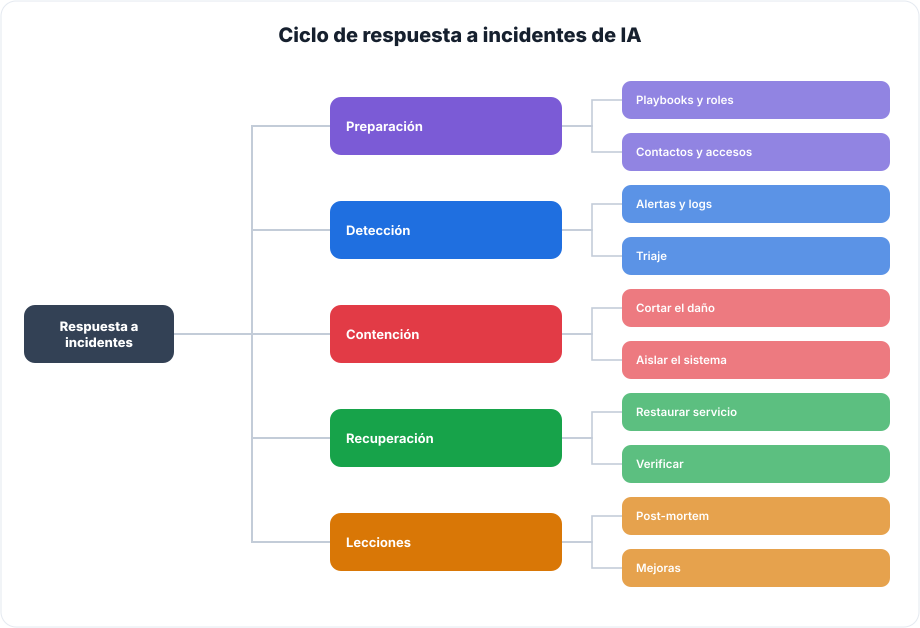
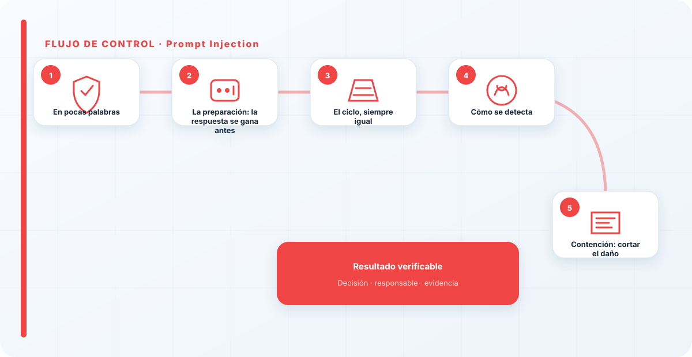
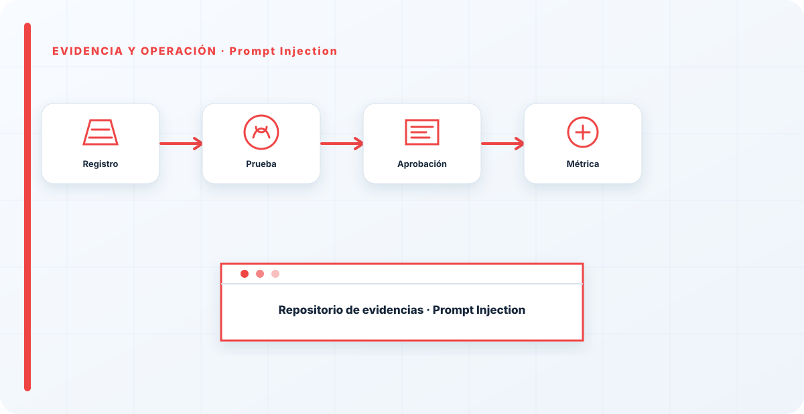

En pocas palabras
Un incidente de prompt injection es de los más difíciles de ver, porque el sistema no se cae: simplemente empieza a hacer lo que le dijo el atacante en lugar de lo que le pediste tú. La entrada —directa en el chat, o escondida en un documento o una web que el sistema procesa— secuestra el comportamiento del modelo, y a menudo el primer síntoma es una respuesta rara o una acción que no encaja con lo que se pidió. Responder bien a esto empieza mucho antes del incidente, el día que decides si vas a registrar lo que entra y sale de tu modelo. Sin esa decisión previa, cuando el incidente llega estás ciego. Por eso este playbook insiste tanto en la preparación: en la inyección, casi todo lo que puedes hacer bien el día del incidente se decidió, en realidad, mucho tiempo antes de que ocurriera.
La preparación: la respuesta se gana antes
La respuesta a un incidente de inyección se gana o se pierde antes de que ocurra, en la preparación. Lo que necesito tener listo de antemano es, ante todo, el registro de prompts y respuestas: es mi caja negra, y sin ella no puedo ni ver que hubo inyección, ni mucho menos investigar cómo entró. También necesito saber, antes del incidente, qué acciones puede desencadenar el modelo, porque de eso depende cómo de grave puede ser el secuestro.
Y necesito un plan mínimo: quién se entera, quién decide, cómo se corta. Un incidente de inyección en un chatbot inofensivo es una molestia; el mismo en un sistema con capacidad de actuar puede ser serio, y la diferencia entre gestionarlo bien o mal casi siempre está en si alguien pensó en todo esto antes. Improvisar la respuesta el día del incidente es la receta para que el daño crezca mientras se decide qué hacer.
El ciclo, siempre igual
Cambia el tipo de incidente, pero la secuencia de fondo no cambia: preparar, detectar, contener, erradicar, recuperar y aprender. Este es el mapa que aplico en todos los incidentes de este pilar, y tenerlo claro evita el error de saltar directamente a "apagar el fuego" sin entender qué se está apagando.

La gracia del ciclo es que cada fase tiene un objetivo distinto y no conviene mezclarlas: detectar es confirmar y entender, contener es frenar el daño, erradicar es quitar la causa, recuperar es volver a la normalidad, y aprender es que no vuelva a pasar. Saltarse la última fase —la de aprender— es lo que condena a las organizaciones a vivir el mismo incidente una y otra vez.

Cómo se detecta
La señal de una inyección suele ser el comportamiento, no una alarma: respuestas fuera de lo esperado, el modelo ignorando sus instrucciones, acciones que no encajan con la petición del usuario. Por eso el registro de prompts y respuestas es lo que te salva; sin él, no puedes ni ver que pasó. Cuando reviso los logs, busco dos cosas: la instrucción que se coló y, sobre todo, por dónde entró.
Esa segunda pregunta es la que cambia todo lo demás. ¿La escribió el usuario directamente en el chat, o venía escondida en un documento que recuperó el RAG, o en una web que el agente consultó? Una inyección directa apunta a un usuario o a un abuso puntual; una inyección indirecta apunta a una fuente contaminada que hay que aislar, y que probablemente puede afectar a más peticiones. Confundir una con otra lleva a contener el sitio equivocado.
Contención: cortar el daño
Lo primero, siempre, es cortar el daño en curso. Si el LLM dispara acciones a partir de sus respuestas, se paran esas acciones. Si la inyección venía de una fuente concreta —un documento, una integración, una web—, se aísla esa fuente para que no siga inyectando en cada nueva petición. La contención no es todavía arreglar el problema de raíz; es frenar la hemorragia mientras entiendes bien qué pasó.
Aquí la clave es delimitar el alcance rápido: ¿fue solo una respuesta manipulada y aislada, o el modelo llegó a ejecutar algo con consecuencias reales? En un chatbot el impacto se queda en una respuesta mala; en un agente, puede haber acciones que haya que revertir, y ahí la urgencia y el alcance de la contención son otros. Delimitar mal el alcance lleva a quedarse corto —dejar daño activo— o a pasarse —tirar medio sistema por una respuesta tonta—.
Erradicar e investigar la causa
Contenido el daño, toca quitar la causa, no solo el síntoma. Investigo cómo fue posible la inyección: casi siempre resulta ser una entrada que no se validaba, un contexto externo que se trataba como de confianza sin serlo, o un modelo con más capacidad de actuar de la que debía. Erradicar es cerrar ese hueco concreto, no solo revertir esta instancia del ataque.
Esta fase es la que distingue una respuesta madura de un parche. Es tentador, con el daño ya contenido y la presión bajando, dar el incidente por cerrado. Pero si no quitas la causa, el mismo ataque volverá a funcionar mañana con otra redacción. La investigación de la causa raíz es incómoda porque a menudo señala una decisión de diseño que habría que cambiar, y por eso es justo la que más se salta.
Recuperación y lecciones
Recuperar es restaurar el comportamiento correcto y, si hubo acciones ejecutadas, deshacerlas hasta donde se pueda. Pero la parte que más valor tiene de todo el proceso es la última: la lección. Casi siempre, cuando termino de investigar el hueco, resulta ser algo que se puede convertir en un control nuevo: una validación que faltaba, una fuente que no debía ser de confianza, un privilegio que había que recortar.
Ese es el bucle que convierte la respuesta a incidentes en algo más que apagar fuegos: cada incidente bien aprendido deja a la organización un poco más fuerte, con un control que antes no tenía. El objetivo no es solo recuperarse de este incidente, es que el siguiente igual no ocurra, o que si ocurre no haga daño. Una organización que aprende de sus incidentes de inyección acaba teniendo un sistema difícil de inyectar; una que solo los apaga los repite indefinidamente.
Comunicación, roles y post-mortem
Un incidente no lo gestiona una persona sola improvisando; lo gestiona un pequeño equipo con roles claros, definidos antes. Quién coordina, quién decide cortar, quién investiga, quién comunica hacia arriba. En un incidente de inyección, la coordinación importa porque las fases se solapan —hay que contener mientras se investiga— y sin roles claros dos personas hacen lo mismo mientras una tercera cosa queda sin hacer. No hace falta un organigrama complejo; hace falta que, cuando salte el incidente, nadie se pregunte "¿y esto quién lo hace?".
Durante el incidente, registro lo que va pasando y las decisiones que se toman: no por burocracia, sino porque ese registro es la base del análisis posterior y, si el incidente tuvo consecuencias, de poder explicar qué se hizo y cuándo. La comunicación hacia la dirección debe ser honesta y a tiempo; esconder o minimizar un incidente en curso es la forma más rápida de convertir un problema técnico en un problema de confianza.
Y cuando todo ha pasado, hago un post-mortem sin buscar culpables. El objetivo no es señalar a quien se equivocó, sino entender cómo el sistema permitió el error y cómo evitarlo. Un post-mortem que busca culpables enseña a la gente a esconder incidentes; uno que busca causas enseña a la organización a no repetirlos. De ese análisis sale, idealmente, el control nuevo que hace que esta inyección concreta ya no funcione la próxima vez.
El error que más me encuentro es no tener logs de los prompts, y entonces el incidente es invisible: sabes que algo raro pasó pero no puedes reconstruir qué, ni cómo entró, ni qué alcance tuvo. Si tu LLM está en producción y no registras qué le entra y qué sale, no es que respondas mal a los incidentes de inyección: es que no te enteras de que ocurren. La caja negra que no grabas es, exactamente, la que no puedes investigar cuando más falta hace.
Los errores que veo una y otra vez
- No registrar prompts y respuestas, dejando el incidente invisible.
- Buscar la inyección solo en lo que escribe el usuario, y no en el RAG o las webs que consulta.
- Tratar una inyección en un agente como si fuera solo una respuesta mala.
- Contener el síntoma y no erradicar la causa, dejando que el ataque vuelva a funcionar.
- No delimitar bien el alcance antes de recuperar.
- No convertir el incidente en un control nuevo.

Cómo lo llevaría a un entorno real
Cuando aterrizo prompt injection en una organización, no empiezo por comprar una herramienta ni por redactar veinte páginas. Empiezo por dibujar qué ocurre hoy: quién solicita el cambio, quién lo aprueba, qué sistemas intervienen, qué datos cruzan el proceso y quién se entera cuando algo falla. Ese dibujo suele descubrir más problemas que cualquier checklist. En respuesta a incidentes, lo peligroso no es solo carecer de controles; también lo es creer que existen porque alguien los escribió una vez.
Después separo lo imprescindible de lo deseable. Lo imprescindible debe poder comprobarse: un responsable identificado, una regla clara, una evidencia fechada y un mecanismo para reaccionar. En este caso revisaría especialmente prompt, instrucción y contexto. No me vale una respuesta del tipo «lo gestiona el proveedor» o «eso lo mira seguridad». Necesito saber qué persona toma la decisión, con qué información y dentro de qué plazo.
La implantación debe crecer con el riesgo. Un piloto interno puede funcionar con una ficha breve y una revisión manual. Un sistema que afecta a clientes, empleados, dinero o información sensible necesita segregación de funciones, pruebas independientes, monitorización y un expediente mantenido. Mi criterio es sencillo: cuanto más difícil sea deshacer el daño, más fuerte debe ser la barrera antes de producción.
Decisiones que deben quedar por escrito
Hay decisiones que no deberían vivir en una reunión ni en un mensaje de chat. Para prompt injection dejaría documentados el alcance, los supuestos, los límites de uso, las excepciones aceptadas y las condiciones que obligan a detener o reevaluar. El documento no tiene que ser enorme, pero sí debe permitir que otra persona entienda por qué se hizo lo que se hizo.
También registraría quién puede cambiar guardrail, quién valida entrada y quién recibe las alertas relacionadas con salida. Cuando esas tres responsabilidades se mezclan, aparece el clásico problema: el mismo equipo construye, aprueba y declara que todo funciona. No siempre se puede separar por completo, sobre todo en organizaciones pequeñas, pero al menos debe existir una revisión por alguien que no dependa del éxito inmediato del despliegue.
Las excepciones merecen un tratamiento propio. Una excepción sin fecha de caducidad acaba convirtiéndose en la arquitectura real. Por eso exigiría motivo, riesgo aceptado, responsable, compensaciones, fecha de revisión y criterio de cierre. Si falta uno de esos elementos, no es una excepción gestionada; es una deuda invisible.
Un ejemplo práctico
Imaginemos que un equipo quiere incorporar prompt injection a un servicio que ya está en producción. La propuesta promete reducir tiempos y automatizar tareas, pero utiliza componentes que cambian con frecuencia. Antes de aprobarlo, pediría una prueba limitada, un inventario de dependencias, un flujo de datos y una definición clara de qué acciones quedan fuera del alcance.
Durante la prueba recogería resultados normales y casos límite. No solo miraría si funciona; comprobaría qué ocurre cuando faltan datos, cambia una versión, se pierde conectividad, llega una entrada manipulada o un usuario intenta superar sus permisos. Ahí es donde se ve si el diseño aguanta. En muchas pruebas felices todo parece seguro porque nadie ha intentado romper la hipótesis de partida.
Si los resultados son aceptables, la salida a producción tendría condiciones: versión fijada, configuración aprobada, logs disponibles, responsables de guardia, procedimiento de rollback y revisión tras las primeras semanas. Si alguno de esos elementos no existe, prefiero retrasar el despliegue. Un día de demora suele ser más barato que investigar después un comportamiento que nadie puede reconstruir.
Qué evidencias guardaría
Para demostrar que el control funciona conservaría evidencias que cuenten una historia completa, no capturas sueltas. La historia debe enlazar necesidad, decisión, implementación, prueba y operación. En prompt injection eso incluye como mínimo la ficha del activo, el diagrama vigente, la configuración aprobada, el resultado de las pruebas y el registro de cambios.
No guardaría información por acumular. Si los logs contienen prompts, documentos, datos personales o secretos, aplicaría minimización, control de acceso y retención. La evidencia debe ayudar a investigar y auditar sin crear una segunda fuga de información. Es frecuente endurecer el sistema principal y dejar un repositorio de evidencias abierto a demasiadas personas.
- Propietario y finalidad de prompt injection, con fecha de revisión.
- Inventario de prompt, instrucción y dependencias asociadas.
- Criterios de aceptación y resultados sobre contexto y guardrail.
- Configuración efectiva, versión y aprobación del cambio.
- Alertas, incidentes, excepciones y acciones correctivas cerradas.
Señales de que el control no está funcionando
El primer síntoma es que nadie sabe responder con rapidez quién es el responsable. El segundo es que la documentación describe una versión distinta de la que está operando. El tercero es que las alertas existen, pero llegan a un buzón que nadie revisa. Cuando aparecen esos tres síntomas, el problema no es tecnológico: el control se ha desconectado de la operación.
También desconfío de las métricas demasiado perfectas. Cero incidentes, cero excepciones y cien por cien de cumplimiento pueden significar excelencia, pero con frecuencia significan que no estamos mirando. Prefiero indicadores que enseñen tendencia: tiempo de corrección, antigüedad de excepciones, cobertura de pruebas, cambios sin revisión y reincidencias.
Por último, revisaría el comportamiento después de cada cambio significativo. En IA, una actualización de modelo, dataset, prompt, herramienta, permiso o proveedor puede alterar el riesgo sin cambiar el nombre del servicio. Si el proceso solo reevalúa cuando se crea un proyecto nuevo, se quedará ciego durante la mayor parte de la vida útil.
Mi criterio de cierre
Considero que prompt injection está razonablemente controlado cuando el equipo puede explicar el proceso sin depender de una sola persona, reconstruir una decisión con evidencias y detener el servicio sin improvisar. No busco perfección documental; busco que la organización pueda tomar decisiones repetibles bajo presión.
El cierre no consiste en marcar todas las casillas. Consiste en demostrar que los riesgos relevantes tienen propietario, que los controles se prueban y que las desviaciones producen una acción. Si la evidencia no cambia ninguna decisión, probablemente estamos generando burocracia. Si una decisión importante no deja evidencia, estamos creando fragilidad.
Este enfoque es el que intento mantener en toda CyberLibrary AI: explicar el control de forma que lo entienda negocio, pero con suficiente profundidad para que arquitectura, seguridad, auditoría y operaciones puedan aplicarlo de verdad.
Referencias y marcos relacionados
Contenido educativo y técnico. No sustituye asesoramiento jurídico ni una auditoría formal.